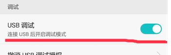
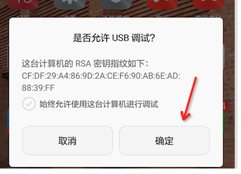
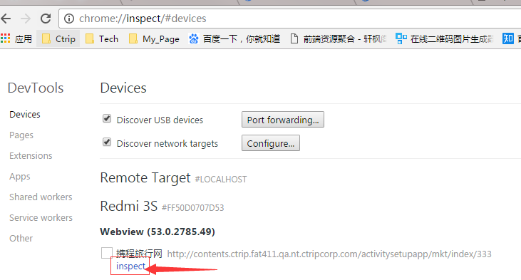
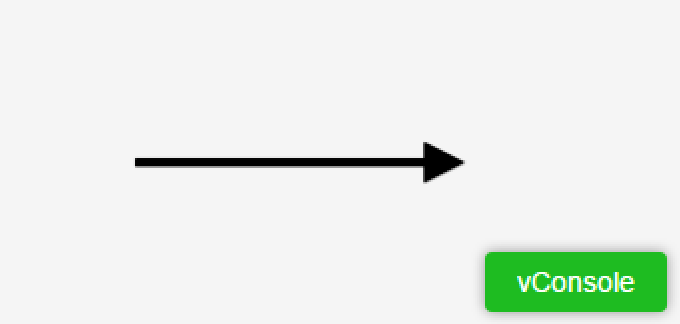
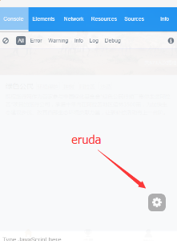
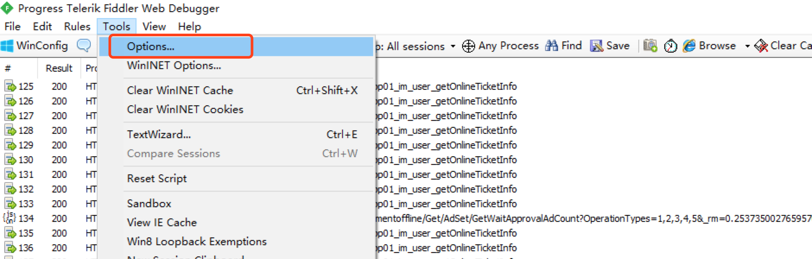
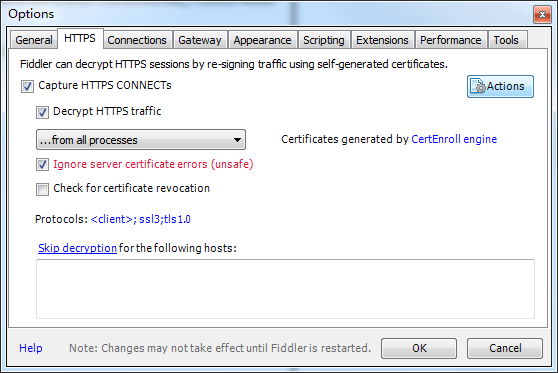
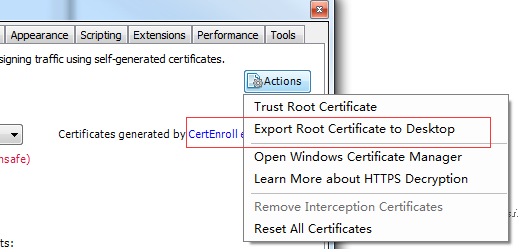

说起网站调试，pc页面和h5页面，假如电脑上能够重现的，都不在话下，调试起来都蛮简单。仅仅需要fiddler一个抓包工具，把线上压缩代码替换成本地无压缩代码就可以了。具体步骤我后面可以详细介绍。但是，仅仅是某款手机重现，其他手机没有问题的情况下如何调试？hybrid页面如何调试呢？这篇文章简单总结下我常用的调试方法。
这个调试仅仅是针对安卓系统，可以调试hybrid,也可以调试h5，但是IOS系统就无能为力了。我很喜欢用这种方式调试android手机。用inspect可以在chrome中模拟一个手机中的webview，你可以在chrome中调试你手机中的代码。
步骤如下：
一般是在手机的开发者工具里面，有的手机连续点击几次版本号可以出现，具体可以网上搜索一下。 如下图：

点击允许USB调试:

(有些手机链接不上，需要安装一些驱动，可以下载PP助手，安装手机驱动，pp助手链接成功，chrome应该就可以链接成功了！)

这两种方式都是通过js代码注入来完成的。
vConsole如下图： 
引入方式可以如下：
(function() {
if (!/vconsole=true/.test(window.location) ) return;//判断浏览器有误参数
var script = document.createElement('script');
script.src = "//pages.c-ctrip.com/amsweb/tools/vconsole.min.js";
document.body.appendChild(script);
script.onload = function() {
var vConsole = new VConsole();
console.log('Hello world');
}
})();eruda调试如下图：

eruda 说明文档
(function() {
if (!/eruda=true/.test(window.location) ) return;//判断浏览器有误参数
var script = document.createElement('script');
script.src = "//pages.c-ctrip.com/amsweb/tools/eruda.min.js";
document.body.appendChild(script);
script.onload = function() {
eruda.init()
}
})();对于fiddler抓包抓http的，很简单，手机设置代理。 fiddler设置端口号

对于http的调试一般没有问题，问题是对于https的调试
首先要勾选忽略错误

然后下载证书

手机中安装证书。
(备注：android手机可能直接点击 FiddlerRoot.cer 没反应，或者提示无法安装，那么就需要从存储设备安装。)
小米安装步骤是：
【设置】->【更多设置】->【系统安全】->【从存储设备安装】→选择证书安装即可
不同手机不一样。可以网上查下。
这个不可以调试hybrid页面（js等读取手机本地的文件的hybrid页面非app直连h5），但是可以远程调试任何手机浏览器页面，支持HTTP/HTTPS(可以调试app 直连h5页面，就是app里面嵌套的h5)
第一步：手机和PC保持在同一网络下（比如同时连到一个Wi-Fi下）
第二步：命令行输入spy-debugger，按命令行提示用浏览器打开相应地址。
第三步：设置手机的HTTP代理，代理IP地址设置为PC的IP地址，端口为spy-debugger的启动端口(默认端口：9888)。
Android设置代理步骤：设置 - WLAN - 长按选中网络 - 修改网络 - 高级 - 代理设置 - 手动
iOS设置代理步骤：设置 - 无线局域网 - 选中网络 - HTTP代理手动
第四步：手机安装证书。
第五步：用手机浏览器访问你要调试的页面即可。
这种方式主要是调试微信，或者百度或者app中直连的h5页面，调试起来很方便。
ios页面调试最好用mac电脑
1：打开iphone手机的开发者模式，流程是：【设置】->【Safari】->【高级】->开启【Web检查器】
2：打开Mac上Safari的开发者模式，流程是【Safari】->【偏好设置】->【高级】→【在菜单栏中显示“开发”菜单】勾选
3：用数据线将iphone手机和mac连接起来，在电脑的safari中按照流程执行：【开发】->【xxx的iphone】→【你的网站】
4 ：这样你就能在mac上面调试用iphone的safari打开的网页了